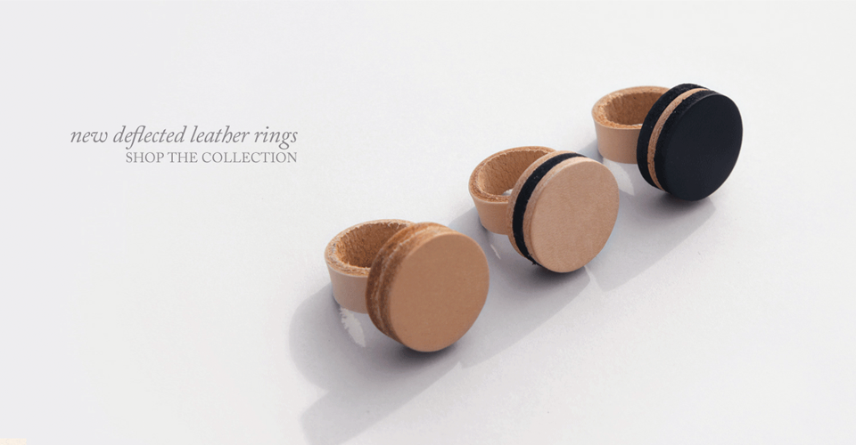
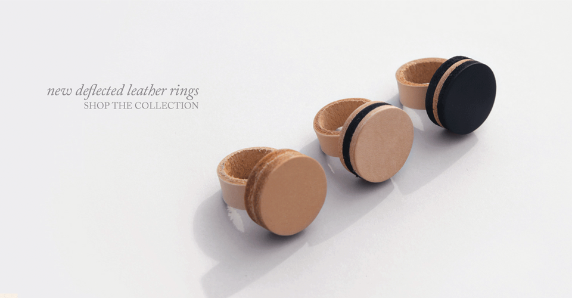

Our Lastest Collection
May 25th, 2012
Quickly re-engineer business growth strategies with sustainable web-readiness. Collaboratively create visionary growth strategies vis-a-vis cooperative functionalities. Holistically extend cross-media technologies rather than cutting edge experiences.
Quickly re-engineer business growth strategies with sustainable web-readiness. Collaboratively create visionary growth strategies vis-a-vis cooperative functionalities. Holistically extend cross-media technologies rather than cutting edge experiences. Read More...